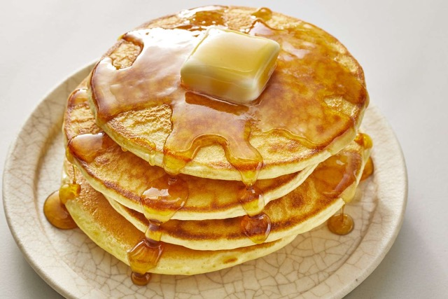

Pancakes

Fluffy and delicious goodness that makes it the best breakfast food.
Ingredients
- 3.5 teaspoons baking powder
- 1 tablespoon white sugar
- 1/4 teaspoon salt, or more to taste
- 1 1/4 cups milk
- 3 tablespoons butter, melted
- 1 egg
Steps
- Sift flour, baking powder, sugar, and salt together in a large bowl. Make a well in the center and add milk, melted butter, and egg; mix until smooth.
- Heat a lightly oiled griddle or pan over medium-high heat. Pour or scoop the batter onto the griddle, using approximately 1/4 cup for each pancake; cook until bubbles form and the edges are dry, about 2 to 3 minutes. Flip and cook until browned on the other side. Repeat with remaining batter.
Source: All Recipes